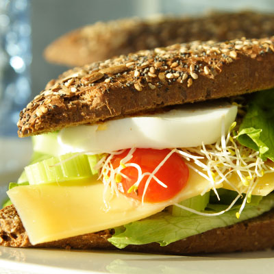

Article 1 - The Value of Money

Say you’ve won a small cash prize. You’re given two options: $50 now or $50 in one year. You’re going to take the $50 now, right? Why wait a year when you can have the exact same amount today? It’s instinct.
It’s also likely a smarter financial decision. A dollar today can be worth more than a dollar tomorrow (or in the case of our example, $50 today is worth more than $50 next year—we’ll discuss why that is below). That’s the essence of the Time Value of Money.
Why is $50 today worth more?
There are two main reasons:
If you take the $50 now, you can put it in the bank and earn interest or invest it and trade risk for potential returns. By this time next year, while the difference might not be huge, your $50 could be more than $50.
Inflation happens. Prices often increase over time, which in turn makes the dollar worth less. In 2017, inflation averaged 2.07%, for example, so your $3 coffee was theoretically $0.06 more expensive by the end of the year. That means your $50 could go farther today than it will in a year. Of course, inflation isn’t guaranteed either—in some cases, there may be a decrease in the general price of goods and services called deflation.
The time value of money in action
One very real example of the time value of money in action that affects many of us: saving for retirement.
You’re 30. You’re hoping to retire when you’re 60. You have $5,000 saved that you want to invest for the next 30 years for your retirement. For the sake of this example, let’s say you earn an annual return of 6%.
What happens to your money over those 30 years given the time value of money? If you earn 6% each year for 30 years, your $5,000 will be worth $28,717.46 (For you math nerds following along at home, we got to that number by using Future Value = Present Value x (1+ Rate)# of Years).
Not bad. But what if you also contributed an extra $1,000 to your savings every year? Your $5,000 and yearly $1,000 contributions earning 6% would be worth $107,775.64 by the time you turn 60.
Why this matters
Understanding the time value of money is key to understanding why investing should be part of a long-term strategy for many people. The sooner you start the better. When it comes to investing, time literally is money.
source: https://bumped.com/blog/explaining-the-time-value-of-money/
Article 2 - GMO Food

A few months ago I was really excited about discovering frozen edamame (soy beans) in my local supermarket. So I wrote a blog post about my new love.
As you do.
What really surprised me was the amount of people leaving comments and emails warning that edamame were soy beans which are GM. Something I hadn’t even thought of.
Anyway after doing some investigation, (aka reading the label!) I realised my edamame were from China. So probably were GM. So I decided to stop buying them and made a mental note to write a followup blog post about my thoughts on genetic modification of food…
So here we are!
My Experience with GM Foods
Back when I was studying Food Science in the 90s, ‘Biotechnology’ was a relatively new field. I found it fascinating and elected to take a subject on Food Biotechnology in my final year of university.
So what did I learn?
Firstly that there’s potential for genetic modification to be helpful.
For example, enabling bacteria to produce the ‘rennet’ required for some cheese making rather than getting it from the traditional source of calves stomachs.
But there was also a lot of potential for harm.
To my mind there are 3 main aspects to this…
1. The Testing.
When we go inserting genetic material from one species into another, we’re doing something that cannot happen in nature. The effects can be difficult to predict.
So rigorous testing is really critical to ensuring no unwanted side effects. Which is relatively easy in a tank of bacteria but more difficult when we’re talking about releasing or even trialling GM crops out in nature.
2. The Politics.
The best way to explain this is with an example. Lets look at the humble soy bean.
The genetic manipulation with soy was to make soybeans resistant to a particular herbicide, namely Round-Up.
The ‘benefit’ here is that weeds can easily be controlled in a soy crop by spraying with said herbicide.
Then farmers have to buy their seeds from the same company that sells them the Round-Up.
And they can’t ‘save’ the seeds to use for next years crop. They must buy fresh seeds (and herbicide) every year from the one company and no one else. Sounds like a brilliant marketing strategy to me.
3. Biodiversity.
If everyone is growing genetically identical crops, regardless of whether they’re genetically modified or not, all our proverbial eggs are in the one basket.
Seems a risky move to me.
So Am I Afraid of GM Foods?
Afraid? No. Wary? yes. Pro-labelling? Absolutely.
And do I personally choose to eat GM foods? Yes and No. It depends.
I’m happy to eat parmesan made with GM rennet but ‘Round-Up-Ready Soybeans?’ No thank you Monsanto. I’d rather have frozen Australian broad beans.
source: https://thestonesoup.com/blog/2015/05/12/genetically-modified-food-should-you-be-afraid/
Article 3 - The View of the World in 2100
The world's population pyramid is changing shape
The world's population will reach 7 billion by the end of October, according to the latest projections from the United Nations. For the first time the UN has attempted to look as far ahead as 2100, using various assumptions about how fertility and mortality rates might change over the years. The average of these estimates suggests that the global population will cross 10 billion by 2085. By 2100, 22.3% of people will be aged 65 or over, up from just 7.6% in 2010. The bulk of population growth is expected to come from the developing world. Africa's population will rise from 1 billion in 2010 to 3.6 billion in 2100. In 1950, 32% of the world's people lived in today's rich countries. By 2100, only 13% will.
source: https://www.economist.com/graphic-detail/2011/05/13/the-world-in-2100